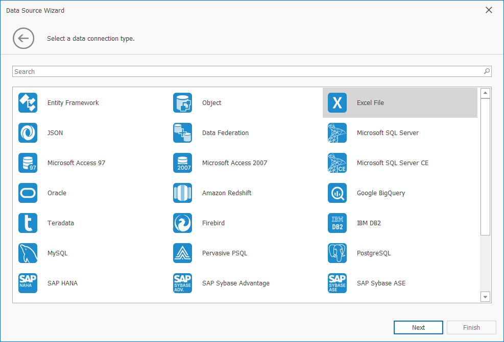
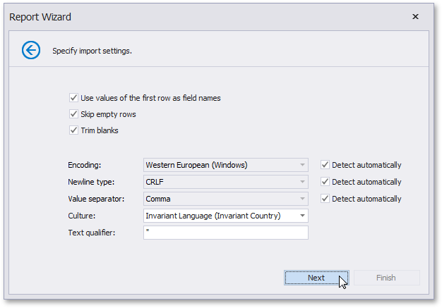

Bind a Report to a CSV File
This tutorial describes how to bind a report to data obtained from a CSV file:
Click the report's smart tag. In the invoked actions list, expand the drop-down menu for the Data Source property and click Add New DataSource.

On the first page of the invoked Data Source Wizard, select Excel File and click Next.

On the next wizard page, click the ellipsis button and locate the required CSV file or enter the full path to the file.

Click Next to proceed to the next wizard page.
The next wizard page allows you to specify the import settings.
Enable the first check box to use values of the first row as field names. If you disable this option, values of the first row will be imported as data and field names will be generated automatically. The Skip empty rows option specifies whether to include empty rows to the result data source.
This page also provides the Encoding, Newline type and Value separator settings that specify the character encoding, the line break type and a character used to separate values in the CSV document. To automatically determine values of these settings, enable the corresponding Detect automatically check boxes. You can also disable these check boxes and manually choose desired values in the drop-down lists.
Use the Culture option to specify the culture information. The Text Qualifier setting allows you to select the character that encloses values in the source file.
Enable the Trim Blanks check box to delete all leading and trailing empty spaces from each value in the CSV file.

Specify required settings and click Next.
The next page allows you to select required columns and specify their settings.
To include a column to the result data source, enable the corresponding Selected check box. Use Name to specify the custom column name and Type to choose the column type.

On this page, you can also preview the result data by clicking the Preview button.

Click Finish to complete the wizard.
The created data source becomes displayed in the Report Explorer's Data Sources node. The Field List reflects the data source's hierarchy.